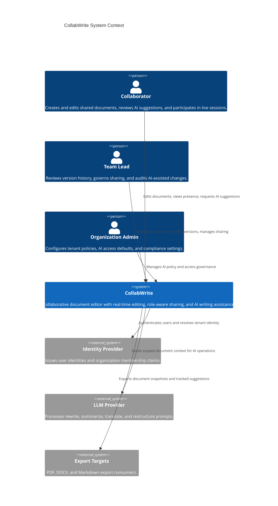
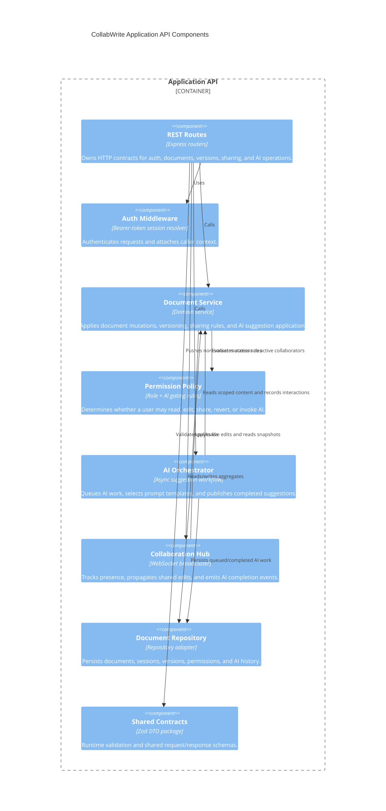

Prepared for the February 2026 midterm brief.
Project codename: CollabWrite
| Stakeholder | Goals | Concerns | Influence on Requirements |
|---|---|---|---|
| Organization administrators | Enforce tenant policy, control AI access, manage compliance and retention | Data leakage to third-party LLMs, over-permissive sharing, lack of auditability | Drives role model, AI policy controls, session controls, and retention requirements |
| Team leads / document owners | Coordinate contributors, preserve quality, review changes, recover from mistakes | Unclear ownership, accidental overwrites, weak version history, no accountability for AI edits | Drives versioning, revert workflows, tracked AI interactions, and owner-only sharing controls |
| Security / compliance reviewers | Ensure sensitive content is protected at rest, in transit, and during AI processing | Prompt data exposure, insufficient encryption, uncontrolled logging, long retention windows | Drives security and privacy NFRs, AI data minimization, and retention policy design |
| AI operations / product managers | Deliver useful, predictable AI assistance within budget | Cost spikes, long response times, irrelevant context, model drift | Drives async AI orchestration, scoped context, quotas, prompt versioning, and graceful degradation |
| Developers / maintainers | Build features in parallel, keep contracts stable, test safely | Tight coupling between web and API, schema drift, merge conflicts across features | Drives monorepo choice, shared contract package, ADRs, module decomposition, and testing strategy |
| Customer support / success teams | Diagnose access issues and explain document history to customers | No reproducible audit trail, weak observability, unclear role behavior | Drives explicit error codes, AI interaction history, and clear sharing/role semantics |
| ID | Level | Description | Trigger | Expected System Behavior | Acceptance Criteria |
|---|---|---|---|---|---|
| COLL-1 | Capability | The system shall support synchronous multi-user editing of the same document. | Two or more authorized collaborators open the same document. | The system establishes a shared editing session and keeps participants on the latest committed content version. | Two browsers connected to the same document see the same latest content after each committed update. |
| COLL-1.1 | Sub-requirement | The system shall propagate collaborator edits to active participants through push-based communication. | An editor submits a live document change. | The server validates access, stores the new content, increments the version, and broadcasts the update to the session. | An edit made by User A appears for User B without page refresh and includes an updated version number. |
| COLL-1.2 | Sub-requirement | The system shall expose presence awareness showing who is currently in the document and each user’s latest cursor index. | A participant joins, leaves, or moves their cursor. | The system updates session presence and broadcasts the current participant list. | Active participants can identify who is online and see cursor positions update in the shared session. |
| COLL-1.3 | Sub-requirement | The system shall detect stale edits and prevent silent overwrite when a change is based on an out-of-date version. | A client submits an edit with a stale base version. | The server rejects the mutation, returns a conflict error, and the client refreshes to the latest snapshot. | A stale update returns VERSION_CONFLICT and the client can recover by reloading the latest state. |
| ID | Level | Description | Trigger | Expected System Behavior | Acceptance Criteria |
|---|---|---|---|---|---|
| AI-1 | Capability | The system shall provide role-aware AI assistance for rewriting, summarizing, translating, and restructuring selected text. | An authorized user invokes an AI feature. | The system validates AI permissions, captures scoped context, records the request, and returns a suggestion asynchronously. | An authorized user can request any supported AI feature and receive a persisted suggestion record. |
| AI-1.1 | Sub-requirement | The system shall invoke AI against the user’s explicit selection range rather than defaulting to the full document. | A user highlights text and clicks an AI action. | The server extracts the selected content and stores the selection metadata with the interaction. | The persisted AI interaction includes selection.start, selection.end, and the captured source text. |
| AI-1.2 | Sub-requirement | The system shall present AI output as a proposal rather than mutating the document immediately. | An AI job completes. | The client receives a completed suggestion event and displays the proposed text in the AI panel. | The document content remains unchanged until the user explicitly applies the suggestion. |
| AI-1.3 | Sub-requirement | The system shall let users apply or reject completed AI suggestions and record the resulting status. | A user clicks apply or reject on a completed suggestion. | The system updates the interaction status to applied, partially_applied, or rejected, and versions the document if content changes. |
Applying a suggestion creates a new document version; rejecting it updates the interaction without changing content. |
| ID | Level | Description | Trigger | Expected System Behavior | Acceptance Criteria |
|---|---|---|---|---|---|
| DOC-1 | Capability | The system shall manage the full document lifecycle including creation, loading, versioning, sharing, and export readiness. | A user creates, opens, shares, or revisits a document. | The system persists the document aggregate and enforces its access policy consistently. | Authorized users can create and reopen documents; unauthorized users cannot access them. |
| DOC-1.1 | Sub-requirement | The system shall allow authorized users to create and load documents through concrete API contracts. | A user submits a new document or opens an existing one. | The API returns structured document data matching the shared schema. | POST /v1/documents returns a document with ID, timestamps, permissions, versions, and AI history arrays. |
| DOC-1.2 | Sub-requirement | The system shall maintain a version history for every persisted content mutation. | A document is edited, reverted, or updated through AI apply. | The server stores a new immutable version record with author, reason, and timestamp. | GET /v1/documents/:id/versions returns the ordered version history including reason metadata. |
| DOC-1.3 | Sub-requirement | The system shall allow owners to share a document with role-specific permissions and AI enablement flags. | An owner updates sharing settings. | The server updates or creates a permission grant for the selected principal. | A share request changes the target principal’s role and AI access without affecting other grants. |
| DOC-1.4 | Sub-requirement | The system shall support export to PDF, DOCX, and Markdown in the target architecture. | A user chooses an export format. | The system produces a point-in-time document snapshot in the requested format. | Export requests produce a downloadable artifact with the selected version and optional tracked AI changes. |
| ID | Level | Description | Trigger | Expected System Behavior | Acceptance Criteria |
|---|---|---|---|---|---|
| USER-1 | Capability | The system shall authenticate users, maintain sessions, and enforce role-based authorization at the document level. | A user logs in or attempts a protected action. | The system resolves the caller identity, session, and document-specific permission before executing the request. | Protected endpoints reject missing or invalid sessions with UNAUTHORIZED or FORBIDDEN. |
| USER-1.1 | Sub-requirement | The system shall create time-bounded sessions after successful authentication. | A valid user logs in. | The system issues a session token with an expiry timestamp and binds it to the user. | POST /v1/auth/login returns a token, user ID, and expiry timestamp. |
| USER-1.2 | Sub-requirement | The system shall enforce the roles owner, editor, commenter, and viewer with different action permissions. |
A user attempts to edit, revert, share, or invoke AI. | The policy layer checks the caller’s role and AI flag before allowing the action. | Viewers cannot edit, commenters cannot mutate content, and only owners can change sharing. |
| USER-1.3 | Sub-requirement | The system shall make AI access independently configurable from edit permissions. | An owner or admin changes document AI policy. | The permission grant stores allowAi separately from the document role. |
A commenter with allowAi=true can request AI suggestions while remaining unable to edit document content directly. |
| ID | Attribute | Measurable Requirement | Justification |
|---|---|---|---|
| NFR-LAT-1 | Latency | Keystroke propagation between active collaborators shall be visible within 250 ms p95 inside the same region. | Longer delay breaks the feeling of co-presence and makes simultaneous editing feel unsafe. |
| NFR-LAT-2 | Latency | AI response initiation shall return an accepted request or quota/error result within 1.5 s p95. | Users should know quickly whether the AI request is queued, denied, or failed. |
| NFR-LAT-3 | Latency | Opening a document under 1 MB shall show the first interactive editor state within 2.0 s p95 on broadband. | Shared editing must feel immediate enough for drafting sessions and classroom demos. |
| NFR-SCALE-1 | Scalability | The target architecture shall support 50 concurrent editors per document. The PoC proves the API/contract shape, not that scale target. | Shared planning docs often involve large workshops or review sessions. |
| NFR-SCALE-2 | Scalability | The target architecture shall support 25,000 concurrently open documents system-wide and horizontal growth of stateless web/API nodes. | Growth should come from adding nodes instead of re-architecting session flow. |
| NFR-AVL-1 | Availability | Target service availability shall be 99.9% monthly excluding planned maintenance. | The product is a collaboration tool and should be dependable during working hours. |
| NFR-AVL-2 | Availability | During partial AI service outage, core editing, sharing, and version history shall remain available, while AI actions degrade to retryable errors. | AI is important but must not take down the editor itself. |
| NFR-SEC-1 | Security & Privacy | All traffic shall use TLS in transit, and document content plus AI logs shall be encrypted at rest in the production architecture. | Documents may contain sensitive project plans, legal drafts, or internal strategy. |
| NFR-SEC-2 | Security & Privacy | AI requests shall send only the minimum scoped text and prompt metadata required for the feature; default retention for raw AI logs shall not exceed 30 days. | Minimizing third-party exposure reduces compliance risk and cost. |
| NFR-SEC-3 | Security & Privacy | Secrets, API keys, and database credentials shall never be committed to source control and must be injected through environment configuration. | This is a baseline control and also essential for student-team collaboration. |
| NFR-USAB-1 | Usability | When a large document has many active collaborators, the UI shall collapse detailed cursor data into a summarized presence bar after 10 visible users. | The editor must remain readable rather than overwhelmed by indicators. |
| NFR-USAB-2 | Usability | The web client shall satisfy WCAG 2.1 AA contrast for primary text and interactive controls and remain usable by keyboard alone. | Collaboration tools are used across varied devices and accessibility needs. |
| ID | User Story | Expected Behavior / Design Choice |
|---|---|---|
| US-01 | As an editor, I want my changes to appear for collaborators while I type so that we can draft together. | Live changes travel over the real-time session and update the shared version immediately after validation. |
| US-02 | As an editor, I want to recover gracefully if someone else changed the same paragraph before my update landed. | The client receives VERSION_CONFLICT, reloads the latest snapshot, and the user can continue from the current shared state. |
| US-03 | As a collaborator, I want to see who is online and where their cursor is so that coordination feels natural. | Presence pills show active users and their latest cursor index in the current document. |
| US-04 | As a user who went offline mid-edit, I want the session to reconnect automatically when connectivity returns. | The client re-establishes the WebSocket session, reloads the latest document snapshot, and rejoins presence. |
| US-05 | As a writer, I want to select a paragraph and ask the AI for a summary so that I can create an executive brief quickly. | AI requests are scoped to the selection and returned as proposals in the side panel. |
| US-06 | As a writer, I want to translate a section into another language so that I can prepare localized versions of the draft. | The translation request includes the target language and returns a persisted suggestion for later apply or reject. |
| US-07 | As a writer, I want to partially accept an AI-generated rewrite so that I stay in control of the final phrasing. | The target architecture supports partial merge and records partially_applied; the PoC exposes full apply and the supporting status model. |
| US-08 | As a team lead, I want to revert a document to a previous version while others are editing so that I can undo a bad change quickly. | Revert creates a new top-of-history version rather than deleting history, and the resulting content is pushed to active collaborators. |
| US-09 | As a document owner, I want to share a document with read-only access so that stakeholders can review without changing content. | Sharing creates or updates a permission grant with role viewer. |
| US-10 | As a team lead, I want to review AI interaction history so that I understand how a section evolved. | AI requests and their statuses remain attached to the document for later inspection. |
| US-11 | As a commenter, I want to invoke AI without editing the raw document so that I can propose wording changes safely. | AI access is separated from edit access through the allowAi flag. |
| US-12 | As a viewer, I want the UI to stop me from editing gracefully so that I understand my role without trial-and-error. | The editor becomes read-only and the UI explains why content is locked. |
| User Story | Functional Requirements | Architecture Components |
|---|---|---|
| US-01 | COLL-1, COLL-1.1 | Web App Editor, Realtime Gateway, Document Service |
| US-02 | COLL-1.3, DOC-1.2 | Web App Editor, Realtime Gateway, Document Service, Document Store |
| US-03 | COLL-1.2 | Web App Presence UI, Realtime Gateway |
| US-04 | COLL-1, USER-1.1 | Web App Session Manager, Realtime Gateway, Auth Middleware |
| US-05 | AI-1, AI-1.1, AI-1.2 | Web App AI Panel, Application API, AI Orchestrator |
| US-06 | AI-1, AI-1.1 | Web App AI Panel, Application API, AI Orchestrator |
| US-07 | AI-1.3, DOC-1.2 | Web App AI Panel, Document Service, Document Store |
| US-08 | DOC-1.2, COLL-1.1 | Version History UI, Application API, Document Service, Realtime Gateway |
| US-09 | DOC-1.3, USER-1.2 | Sharing UI, Application API, Permission Policy |
| US-10 | AI-1.3, DOC-1.2 | AI History Panel, Document Store, Application API |
| US-11 | USER-1.3, AI-1 | Permission Policy, AI Orchestrator, Web App AI Panel |
| US-12 | USER-1.2 | Web App Editor, Permission Policy |
| Rank | Driver | Why It Dominates the Design |
|---|---|---|
| 1 | Low-latency collaborative editing | The core product fails if shared edits feel slow or unsafe. This drove the push-based real-time channel and explicit version conflict handling. |
| 2 | Security and privacy of document content | Sensitive text plus third-party LLM processing requires scoped context, role checks, and audit-friendly data models. |
| 3 | Predictable AI user experience | AI is a product feature, not a novelty. Suggestions must be proposals, async, role-aware, and undoable through version history. |
| 4 | Modularity for team parallelism | Frontend, backend, contracts, and AI flows need clean boundaries so multiple developers can work safely in parallel. |
| 5 | Auditability and recovery | Version history and AI interaction records are essential because collaborative writing regularly needs rollback and explanation. |
If the ranking changed, the architecture would change. For example, if cost minimization outranked collaboration latency, we would likely prefer heavier polling, reduced presence detail, and more batched AI flows. Instead, the design spends complexity on WebSocket propagation and explicit proposal workflows because user trust in collaboration is the primary driver.

The system context shows CollabWrite as the central system sitting between three human actor categories and three external systems. The most important external boundary is the LLM provider because it introduces latency, privacy, and cost trade-offs. Identity is modeled externally as well so authentication remains replaceable without changing document-domain logic.
C4Context
title CollabWrite System Context
Person(collaborator, "Collaborator", "Creates and edits shared documents, reviews AI suggestions, and participates in live sessions.")
Person(teamLead, "Team Lead", "Reviews version history, governs sharing, and audits AI-assisted changes.")
Person(orgAdmin, "Organization Admin", "Configures tenant policies, AI access defaults, and compliance settings.")
System(collabwrite, "CollabWrite", "Collaborative document editor with real-time editing, role-aware sharing, and AI writing assistance.")
System_Ext(identityProvider, "Identity Provider", "Issues user identities and organization membership claims.")
System_Ext(llmProvider, "LLM Provider", "Processes rewrite, summarize, translate, and restructure prompts.")
System_Ext(exportTargets, "Export Targets", "PDF, DOCX, and Markdown export consumers.")
Rel(collaborator, collabwrite, "Edits documents, views presence, requests AI suggestions")
Rel(teamLead, collabwrite, "Reviews documents, reverts versions, manages sharing")
Rel(orgAdmin, collabwrite, "Manages AI policy and access governance")
Rel(collabwrite, identityProvider, "Authenticates users and resolves tenant identity")
Rel(collabwrite, llmProvider, "Sends scoped document context for AI operations")
Rel(collabwrite, exportTargets, "Exports document snapshots and tracked suggestions")

The container design separates the web client from the REST API and the real-time gateway. In the PoC, the REST API and WebSocket gateway run in the same Node.js process but remain distinct containers logically because they solve different problems and will scale differently later. The shared contract package is included explicitly because it is a first-class architectural mechanism used to prevent schema drift across teams.
C4Container
title CollabWrite Container Diagram
Person(user, "User", "Collaborator, team lead, or org admin")
System_Boundary(collabwrite, "CollabWrite") {
Container(web, "Web App", "React + Vite + TypeScript", "Rich-text editing UI, AI controls, sharing UI, version history, and presence visualization.")
Container(api, "Application API", "Node.js + Express + TypeScript", "REST API for auth, documents, versions, sharing, and AI orchestration.")
Container(realtime, "Realtime Gateway", "WebSocket hub in Node.js", "Pushes presence and shared content updates to active collaborators.")
Container(shared, "Shared Contracts Package", "TypeScript + Zod", "Versioned schemas, message contracts, and shared types consumed by web and API.")
ContainerDb(dataStore, "Document Store", "PostgreSQL in target architecture; in-memory adapter in PoC", "Documents, permissions, versions, AI interaction history, and sessions.")
Container(queue, "AI Job Queue", "Background worker / queue abstraction", "Decouples long-running AI tasks from synchronous API requests.")
}
System_Ext(identityProvider, "Identity Provider", "OIDC/SAML provider")
System_Ext(llmProvider, "LLM Provider", "Hosted LLM API")
Rel(user, web, "Uses", "HTTPS")
Rel(web, api, "CRUD, AI requests, sharing, version history", "HTTPS/JSON")
Rel(web, realtime, "Presence join, content updates, AI completion events", "WebSocket")
Rel(api, shared, "Consumes schemas and DTOs", "Workspace package")
Rel(web, shared, "Consumes schemas and DTOs", "Workspace package")
Rel(api, dataStore, "Reads/writes documents, permissions, sessions")
Rel(realtime, dataStore, "Reads latest content and updates collaborator counters")
Rel(api, queue, "Enqueues AI operations")
Rel(queue, llmProvider, "Invokes prompts with scoped document context")
Rel(api, identityProvider, "Verifies identity and tenant claims")

The application API container is the best Level 3 candidate because it contains most of the business rules: authorization, versioning, AI orchestration, and contract validation. The PoC implementation mirrors this decomposition through route modules, services, a collaboration hub, and an in-memory repository adapter.
C4Component
title CollabWrite Application API Components
Container_Boundary(api, "Application API") {
Component(restRoutes, "REST Routes", "Express routers", "Owns HTTP contracts for auth, documents, versions, sharing, and AI operations.")
Component(authMiddleware, "Auth Middleware", "Bearer-token session resolver", "Authenticates requests and attaches caller context.")
Component(documentService, "Document Service", "Domain service", "Applies document mutations, versioning, sharing rules, and AI suggestion application.")
Component(policyEngine, "Permission Policy", "Role + AI gating rules", "Determines whether a user may read, edit, share, revert, or invoke AI.")
Component(aiOrchestrator, "AI Orchestrator", "Async suggestion workflow", "Queues AI work, selects prompt templates, and publishes completed suggestions.")
Component(realtimeHub, "Collaboration Hub", "WebSocket broadcaster", "Tracks presence, propagates shared edits, and emits AI completion events.")
Component(documentRepository, "Document Repository", "Repository adapter", "Persists documents, sessions, versions, permissions, and AI history.")
Component(sharedContracts, "Shared Contracts", "Zod DTO package", "Runtime validation and shared request/response schemas.")
}
Rel(restRoutes, authMiddleware, "Uses")
Rel(restRoutes, documentService, "Calls")
Rel(restRoutes, aiOrchestrator, "Calls")
Rel(documentService, policyEngine, "Evaluates access rules")
Rel(documentService, documentRepository, "Reads/writes aggregates")
Rel(aiOrchestrator, documentService, "Reads scoped content and records interactions")
Rel(aiOrchestrator, documentRepository, "Persists queued/completed AI work")
Rel(realtimeHub, documentService, "Applies live edits and reads snapshots")
Rel(restRoutes, realtimeHub, "Pushes non-socket mutations to active collaborators")
Rel(restRoutes, sharedContracts, "Validates payloads")
| Module | Responsibility | Depends On | Exposes |
|---|---|---|---|
| Web editor module | Owns text editing UX, selection capture, document switching, and read-only behavior by role | Shared contracts, REST API, realtime gateway | DocumentView, SelectionRange, editor events |
| Frontend collaboration state | Tracks current document, current version, participants, reconnect state, and AI panel state | WebSocket channel, shared message schemas | Presence UI, reconnect logic, socket message handlers |
| Realtime synchronization layer | Validates join context, tracks presence, applies live edits, broadcasts updates | Auth service, document service, shared contracts | WebSocket session /ws, presence.*, document.updated, ai.completed messages |
| AI assistant service | Persists AI interactions, scopes context, schedules async completion, enforces quota/policy | Document service, repository, LLM adapter or mock adapter | requestAi, completeAi, suggestion lifecycle |
| Document storage and versioning | Stores document aggregate, immutable versions, permissions, and AI history | Repository adapter | CRUD, version history, revert, share, apply suggestion |
| Authentication and authorization | Resolves session tokens and enforces role rules plus allowAi |
Session store, permission grants | Auth middleware, login endpoint, access decisions |
| Shared contract package | Maintains request/response/message schemas for web and API | Zod, TypeScript | @midterm/shared DTOs and runtime parsers |
AI sees the explicit user selection by default. This choice minimizes privacy risk, reduces token cost, and improves prompt relevance. The target architecture may extend scope to “selection plus heading context” or “selection plus neighboring paragraphs” for restructure operations, but the default remains opt-in and narrow. For very long documents, the system should load only the requested segment plus lightweight structural metadata, not the full document body.
AI output is presented as a tracked proposal in the right-hand panel. This is safer than instant inline replacement because:
The current PoC supports apply and reject. The target product also supports partial acceptance, which is already represented in the data model through partially_applied.
The system does not lock the selected region during AI generation. Other edits may continue. If the user applies a completed suggestion, that application becomes a new version and is broadcast to the session like any other edit. This avoids pessimistic locking complexity while preserving recoverability through version history.
Prompt logic is template-based and versioned rather than hardcoded inline in controllers. Each AI interaction records promptTemplateVersion so the team can compare behavior over time and revise prompts without losing traceability. In the production architecture, prompt templates live in a dedicated prompts directory and are loaded by the AI orchestration layer.
The target product uses different model classes by task:
When quota is exceeded, the API returns a specific quota_exceeded state so the client can distinguish this from a transient model error.
The design deliberately mixes synchronous REST and asynchronous push:
| Interaction | Method + Path | Request Contract | Response Contract | Notes |
|---|---|---|---|---|
| Login | POST /v1/auth/login |
{ userId } |
{ session, user } |
PoC uses seeded users; production swaps to IdP-backed login |
| Session lookup | GET /v1/auth/me |
Bearer token | { session, user } |
Validates token and refreshes client context |
| List users | GET /v1/users |
none | { users[] } |
Used for demo login and sharing UI |
| List documents | GET /v1/documents |
Bearer token | { documents[] } |
Returns only documents visible to the caller |
| Create document | POST /v1/documents |
{ title, content } |
{ document } |
Seeds initial owner permission and version 1 |
| Load document | GET /v1/documents/:id |
Bearer token | { document } |
Returns content, permissions, versions, AI history |
| Update content | PUT /v1/documents/:id/content |
{ baseVersion, content, reason } |
{ document, savedVersion } |
Rejects stale base version |
| List versions | GET /v1/documents/:id/versions |
Bearer token | { versions[] } |
Ordered newest-first |
| Revert version | POST /v1/documents/:id/revert |
{ versionNumber } |
{ document, savedVersion } |
Creates a new top-of-history version |
| List permissions | GET /v1/documents/:id/permissions |
Bearer token | { permissions[] } |
Owner/editor use this to understand access |
| Share document | POST /v1/documents/:id/share |
{ principalType, principalId, role, allowAi } |
{ permissions[] } |
Owner-only |
| List AI interactions | GET /v1/documents/:id/ai-interactions |
Bearer token | { interactions[] } |
Supports audit and reload |
| Request AI | POST /v1/documents/:id/ai-operations |
{ feature, selection, targetLanguage? } |
{ interaction } |
Returns 202 Accepted or 429 quota result |
| Apply AI suggestion | POST /v1/documents/:id/ai-interactions/:iid/apply |
{ mode, acceptedText? } |
{ document } |
Creates a new version if content changes |
| Reject AI suggestion | POST /v1/documents/:id/ai-interactions/:iid/reject |
{} |
{ interactions[] } |
Marks suggestion as rejected |
The client joins a document session through:
GET ws://host/ws?token=<session>&documentId=<documentId>
Server-to-client messages:
presence.snapshotpresence.updateddocument.updatedai.completedcursor.updated (reserved for future richer cursor rendering)Client-to-server messages:
document.changecursor.changeFrom the client perspective, AI is asynchronous:
POST /ai-operations.ai.completed over WebSocket.This avoids long synchronous HTTP waits and distinguishes queue acceptance from model completion.
Clients distinguish failure modes by explicit error codes or interaction status:
queued or in_progressfailed429 with interaction status quota_exceededVERSION_CONFLICTUNAUTHORIZEDFORBIDDEN, EDIT_NOT_ALLOWED, SHARE_NOT_ALLOWED, AI_NOT_ALLOWEDAuthentication is required because the product manages private content and document-scoped permissions. The system expects:
Document roles:
| Role | Read | Edit | Revert | Share | Invoke AI |
|---|---|---|---|---|---|
| Owner | Yes | Yes | Yes | Yes | Yes |
| Editor | Yes | Yes | Yes | No | If allowAi=true |
| Commenter | Yes | No | No | No | If allowAi=true |
| Viewer | Yes | No | No | No | No by default |
The most important privacy consideration is third-party AI processing. The design mitigates this by sending only scoped selections, logging prompt template versions, and treating AI access as a separate policy knob.
The system uses a hybrid push model:
This is more complex than polling, but it aligns with the top-ranked architectural driver: low-latency collaboration.
The project uses a monorepo. With a small student team and heavy shared DTO usage, a monorepo is the lowest-friction option because it keeps web, API, and shared contracts versioned together. A multi-repo split would create unnecessary coordination cost every time request/response schemas evolve.
.
├── apps
│ ├── api
│ │ └── src
│ │ ├── middleware
│ │ ├── realtime
│ │ ├── repositories
│ │ ├── routes
│ │ ├── services
│ │ ├── utils
│ │ ├── app.ts
│ │ ├── app.test.ts
│ │ └── server.ts
│ └── web
│ ├── index.html
│ └── src
│ ├── components
│ ├── styles
│ ├── api.ts
│ ├── App.tsx
│ └── main.tsx
├── packages
│ └── shared
│ └── src
│ ├── index.ts
│ └── index.test.ts
├── docs
│ ├── diagrams
│ └── report
├── package.json
└── README.md
Shared request/response types and runtime validation live in packages/shared. This package exposes Zod schemas plus inferred TypeScript types. The API uses them for runtime validation; the frontend uses them for compile-time safety and message handling.
Secrets are environment-driven. The PoC only needs optional variables such as VITE_API_URL, but the production architecture expects LLM keys, database URLs, and session secrets to live in environment variables or a secret manager. .env files are gitignored and .env.example documents the required keys.
Tests sit next to source where practical:
packages/shared/src/index.test.ts for contract testsapps/api/src/app.test.ts for API integration testsPlanned test layers:
AI integration is tested through a deterministic mock provider so tests do not require paid API calls.

The document aggregate stores more than content: ownership, current version, timestamps, permissions, immutable versions, and AI interaction history. That is necessary because the product needs accountability, not just raw text storage.
erDiagram
USER ||--o{ SESSION : owns
USER ||--o{ DOCUMENT : creates
USER ||--o{ DOCUMENT_PERMISSION : receives
USER ||--o{ AI_INTERACTION : initiates
USER ||--o{ DOCUMENT_VERSION : authors
TEAM ||--o{ TEAM_MEMBERSHIP : contains
USER ||--o{ TEAM_MEMBERSHIP : joins
DOCUMENT ||--o{ DOCUMENT_PERMISSION : grants
DOCUMENT ||--o{ DOCUMENT_VERSION : records
DOCUMENT ||--o{ AI_INTERACTION : tracks
DOCUMENT ||--o{ SHARED_LINK : exposes
TEAM ||--o{ DOCUMENT_PERMISSION : may_receive
USER {
string id PK
string email
string display_name
string global_role
string tenant_id
}
SESSION {
string token PK
string user_id FK
datetime expires_at
string device_label
}
TEAM {
string id PK
string name
string tenant_id
}
TEAM_MEMBERSHIP {
string id PK
string team_id FK
string user_id FK
string team_role
}
DOCUMENT {
string id PK
string owner_id FK
string title
text current_content
int current_version
datetime created_at
datetime updated_at
string status
}
DOCUMENT_PERMISSION {
string id PK
string document_id FK
string principal_type
string principal_id
string role
bool allow_ai
datetime created_at
}
SHARED_LINK {
string id PK
string document_id FK
string access_token
string role
datetime expires_at
}
DOCUMENT_VERSION {
string id PK
string document_id FK
int version_number
text content_snapshot
string created_by FK
string reason
datetime created_at
}
AI_INTERACTION {
string id PK
string document_id FK
string initiated_by FK
string feature
string status
int selection_start
int selection_end
text source_text
text suggested_text
string prompt_template_version
string model
int quota_consumed
datetime created_at
datetime completed_at
}
Modeling decisions:
@midterm/shared| Team Member Role | Ownership Area | Responsibilities |
|---|---|---|
| Frontend lead | apps/web |
Editor UX, presence visualization, AI suggestion panel, accessibility |
| Backend/API lead | apps/api/routes, apps/api/services |
REST contracts, auth, sharing, versioning, API tests |
| Collaboration/infra lead | apps/api/realtime, deployment scripts, CI |
Realtime session behavior, observability, environment setup |
| AI/platform lead | prompt templates, AI orchestration, quota policy, mock/real providers | AI workflow, privacy minimization, prompt versioning |
Features that span ownership, such as AI-assisted editing, are delivered through one cross-functional issue with explicit subtasks per owner and one designated integrator. Technical disagreements follow a lightweight ADR or RFC process; unresolved issues escalate to the backend/API lead plus one reviewer within 24 hours.
main, named feat/<scope>-<ticket>, fix/<scope>-<ticket>, or docs/<scope>-<ticket>.main, squash merge after review.web, api, ai, realtime, infra.The team uses a lightweight Scrum-style methodology with one-week iterations from April 5, 2026 through May 24, 2026. Work is prioritized by architectural dependency first, then user-visible value:
Infrastructure, testing, and data-model work are tracked as first-class backlog items with acceptance criteria, not treated as side work.
| Risk | Likelihood | Impact | Mitigation | Contingency |
|---|---|---|---|---|
| Real-time edit conflicts become too frequent with naive full-document updates | Medium | Users lose trust in collaboration and edits may be overwritten | Move from full-document pushes to OT/CRDT or patch-based operations, add conflict telemetry early | Freeze simultaneous same-region editing and fall back to optimistic locking plus explicit conflict resolution UI |
| Third-party AI latency or outages degrade the whole product | High | AI feels broken, but editing must continue | Keep AI asynchronous, decouple through queue, surface retryable states | Disable AI features temporarily while preserving editing, sharing, and history |
| AI cost grows unpredictably with large selections and repeated requests | Medium | Budget overrun or forced throttling | Enforce scoped context, quotas, tenant budget caps, and prompt templates by feature | Reduce available AI features or switch to lower-cost models for non-critical tasks |
| Schema drift between frontend and backend breaks integration late in the sprint | Medium | Demo failures and lost integration time | Keep shared contracts in a workspace package and test responses against schemas | Temporarily freeze feature work and repair contract mismatches before resuming |
| Ownership boundaries fail and cross-cutting features merge poorly | Medium | Integration stalls, PRs become large, bugs increase | Use clear module ownership, small PRs, and an explicit integrator for cross-functional work | Re-scope the sprint, assign one engineer to integration-only work, and defer lower-priority features |
| Date | Milestone | Acceptance Criteria |
|---|---|---|
| April 7, 2026 | Contract baseline complete | Shared DTO package exists; login and document CRUD schemas are agreed and reviewed. |
| April 14, 2026 | Authenticated CRUD slice complete | API serves document create/load/update with auth; integration tests pass. |
| April 21, 2026 | Realtime collaboration slice complete | Two clients can join the same document, see presence, and receive shared edits in under target demo conditions. |
| April 28, 2026 | Versioning and sharing complete | Version history and owner-managed permission updates work through the UI and API. |
| May 8, 2026 | AI proposal workflow complete | AI requests queue asynchronously, suggestions appear in the UI, and apply/reject flows persist status correctly. |
| May 17, 2026 | Hardening sprint complete | README, diagrams, ADRs, risk register, tests, and environment setup are current; demo script is rehearsed. |
| May 24, 2026 | Final submission candidate | End-to-end demo passes from fresh clone, report is exported to PDF, and repository state is submission-ready. |
The implemented PoC validates the architectural skeleton in code:
apps/webapps/apipackages/sharedThese omissions are deliberate. The PoC proves the contracts, module boundaries, and communication model without pretending the prototype is already production-ready.
| Architecture Element | PoC Implementation |
|---|---|
| Web App container | apps/web React client |
| Application API container | apps/api Express app and route modules |
| Realtime Gateway | apps/api/src/realtime/collaboration-hub.ts |
| Shared Contracts | packages/shared/src/index.ts |
| Document Store | apps/api/src/repositories/in-memory-store.ts as the PoC adapter |
| AI Orchestrator | apps/api/src/services/ai-service.ts with async suggestion completion |
Use the root-level commands:
npm install
npm run dev
Frontend: http://localhost:5173
Backend: http://localhost:4000
The repository currently passes:
npm run typechecknpm testnpm run buildThe backend was also smoke-tested through live curl requests against http://localhost:4000/health, POST /v1/auth/login, and GET /v1/documents.
Every user story is covered by at least one functional requirement, and every functional requirement maps to one or more architectural components. The code mirrors the highest-value architecture slices directly: editor UI, shared contracts, document service, auth flow, AI orchestration, versioning, and real-time synchronization.